La caja que protege el encéfalo, el macizo que sostiene la cara y la cavidad donde vive el ojo
Como siempre: responde con lo que ya tienes. No hay nota, y equivocarse ahora es exactamente para lo que sirve este bloque. Al final de la mañana volvemos sobre las cinco.
Si el cráneo existe para proteger el encéfalo, ¿por qué está perforado por decenas de agujeros? ¿No lo debilita?
Un golpe fuerte en la sien puede matar en pocas horas; uno igual de fuerte en la nuca, casi nunca. ¿Qué hay en la sien que no hay atrás?
Mira la foto de un bebé: la frente es enorme y la cara diminuta. ¿Qué es lo que todavía no ha crecido, y qué es lo que lo hará crecer?
La órbita tiene cuatro paredes. Una de ellas es tan delgada que en un cráneo seco se transparenta. ¿Cuál dirías que es, y qué hay justo al otro lado?
Cuando alguien llora de verdad, termina sonándose la nariz. No es casualidad ni es que «se le corra el moco»: hay un tubo. ¿Dónde empieza, por qué hueso baja y dónde desemboca? Esta pregunta es, literalmente, el resumen de la clase de hoy.
En la clase 4 contamos los huesos de la cabeza: 22, ocho craneales y catorce faciales. Hoy hay que dar un paso más, porque esa división no es solo un recuento: son dos estructuras distintas, con orígenes distintos, funciones distintas y tiempos de crecimiento distintos, que resulta que están pegadas.
La envoltura ósea del encéfalo y de sus cubiertas. Tiene un techo abovedado, la calvaria, y un suelo, la base del cráneo.
Cuatro impares en la línea media —frontal, etmoides, esfenoides y occipital— y dos pares: temporales y parietales.
El esqueleto de la cara. Se desarrolla a partir del mesénquima de los arcos faríngeos del embrión, no del que rodea al encéfalo.
Rodea la boca, la nariz y la mayor parte de las órbitas. Casi todos van en pareja; solo el vómer y la mandíbula son impares.
La consecuencia de esa doble naturaleza es la que responde la pregunta 3 del inicio. El neurocráneo crece empujado por el encéfalo, que casi termina de crecer en la infancia; el viscerocráneo crece empujado por los dientes y por la respiración, y sigue creciendo mucho después.
Esta es la vista anterior del cráneo con cada hueso de un color, sin nombres. Tómate un minuto: cuenta cuántos colores distintos ves y trata de nombrarlos. Después abre la versión rotulada y compara.
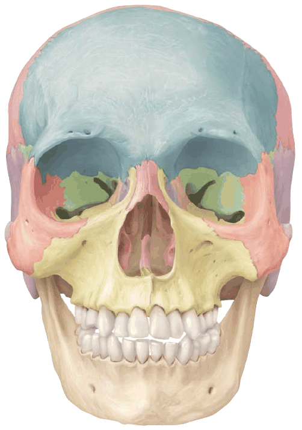
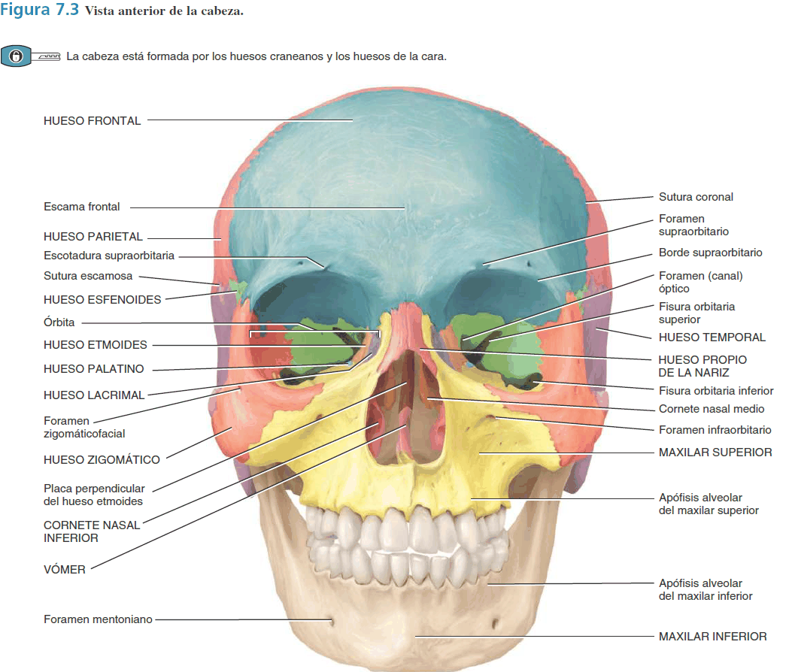
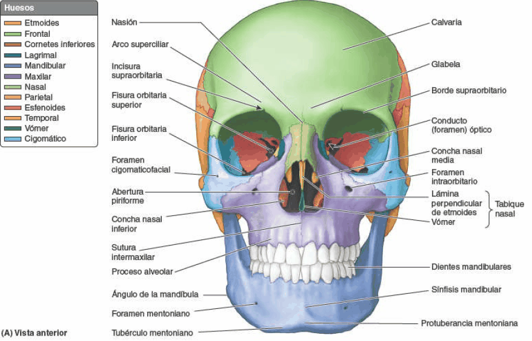
Marcados en rojo los siete que llegan a la órbita. Vuelve a esta lista cuando lleguemos a la sesión 2.
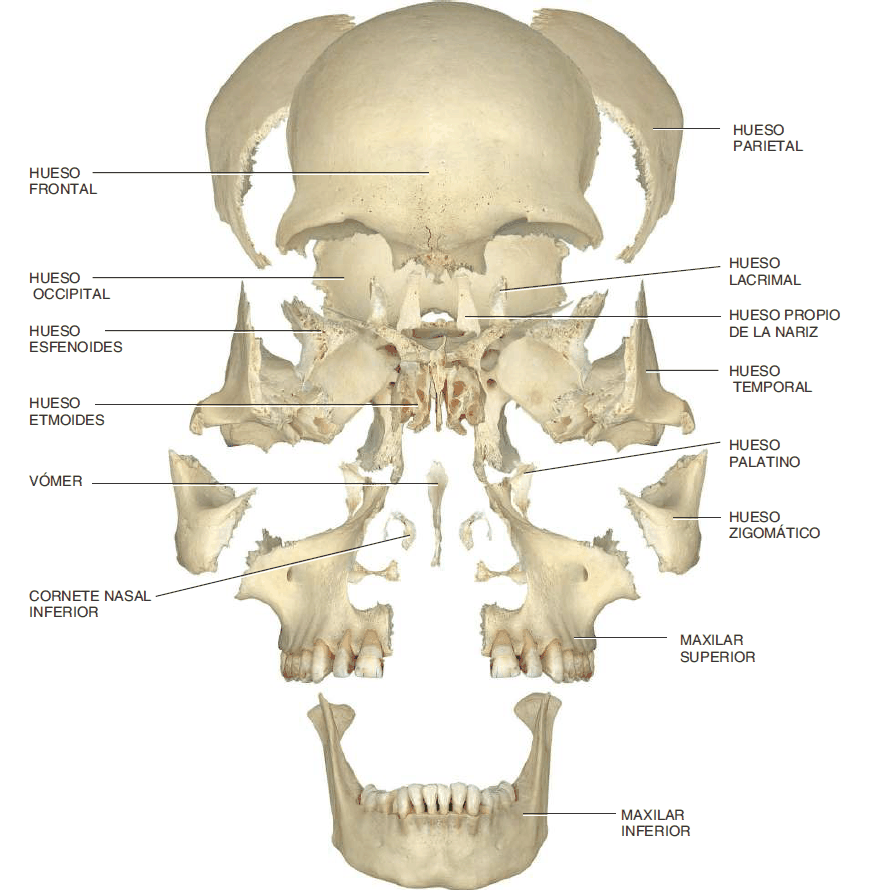
1. Un compañero afirma: «el etmoides es un hueso de la cara, porque está en la nariz». ¿Qué está confundiendo?
Un cráneo es una sola cosa, pero en el examen y en la consulta siempre lo vas a ver proyectado desde un lado: en una foto, en un atlas, en una radiografía. Cada vista enseña unas estructuras y esconde otras, y aprender anatomía de la cabeza es, en buena medida, aprender qué se ve desde dónde.
En la clase 4 miramos cuatro vistas por encima. Hoy vamos las seis, y en cada una te doy lo que hay que localizar sí o sí. Abre una a una, sin prisa.
Es la vista de tu profesión. Muestra las dos órbitas enteras, la abertura piriforme y las arcadas dentarias.
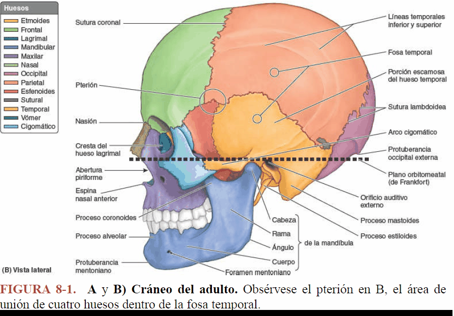
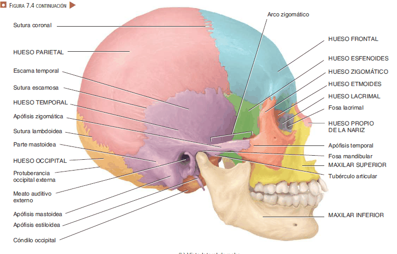
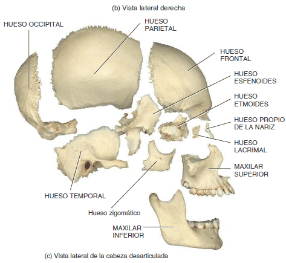
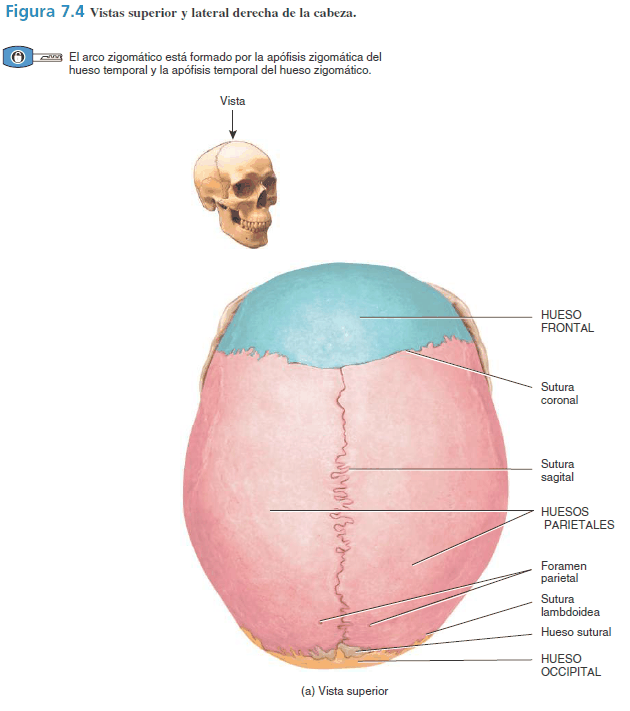
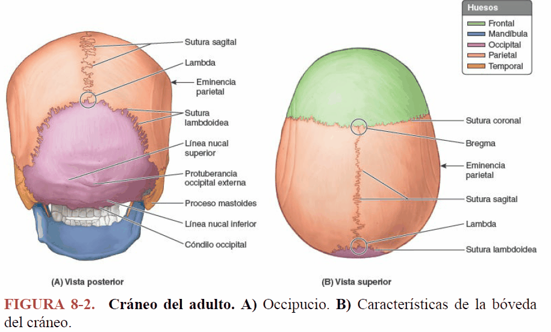
La cara posterior la forman el occipital, la parte de atrás de los dos parietales y las porciones mastoideas de los temporales. Lo que hay que localizar:
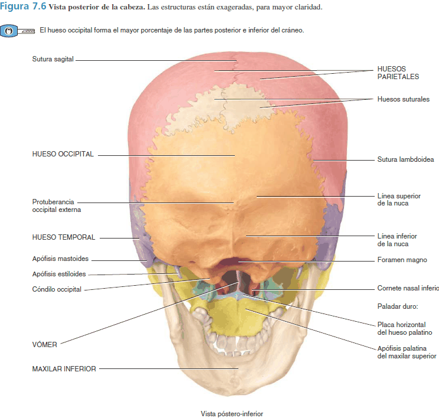
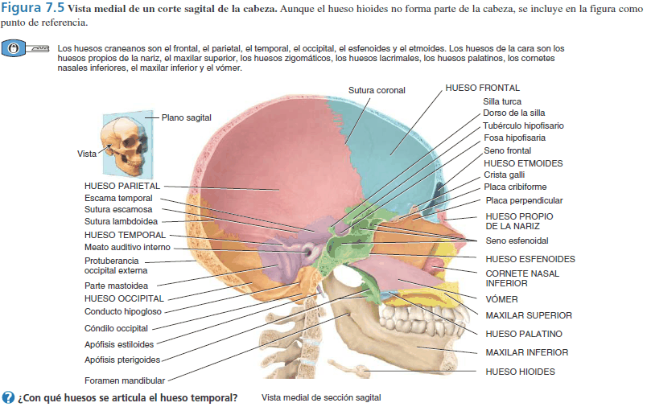
Se estudia en la sección 04, junto con la cara interna. Adelanto lo esencial: aquí están el paladar duro (dos tercios de maxilar, un tercio de palatino), las coanas separadas por el vómer, la fosa mandibular donde encaja la mandíbula, y casi todos los agujeros grandes del cráneo — el magno, el yugular, el carotídeo, el oval, el espinoso y el estilomastoideo.
Vuelve a la vista anterior y busca tres agujeros, uno encima del otro, casi en la misma vertical:
En el borde supraorbitario del frontal. Sale por él el nervio supraorbitario, rama del oftálmico (V1).
Un centímetro por debajo del reborde orbitario, en el maxilar. Sale el nervio infraorbitario, rama del maxilar (V2).
Bajo el segundo premolar, en la mandíbula. Sale el nervio mentoniano, rama del mandibular (V3).
Esos tres puntos se palpan, y presionarlos reproduce el dolor cuando el nervio correspondiente está irritado. Para ti importa sobre todo el supraorbitario: la sensibilidad de la córnea, de la conjuntiva y del párpado superior viaja por V1, la misma rama. Y el infraorbitario es el que se anestesia —o el que queda dormido tras una fractura del piso de la órbita, como veremos en la sesión 2.
2. Estás mirando una foto de un cráneo y ves el foramen magno, los cóndilos occipitales y el paladar duro completo, pero no ves ninguna sutura de la bóveda ni las órbitas. ¿Qué vista es?
En la clase 4 clasificamos las suturas como articulaciones fibrosas inmóviles y vimos sus cuatro formas. Hoy nos interesa otra cosa: dónde están y, sobre todo, dónde se cruzan. Porque los puntos donde tres o cuatro huesos se encuentran tienen nombre propio, se palpan a través de la piel, y son la forma en que los clínicos se orientan sobre una cabeza sin abrirla.
| Sutura | Une | De dónde viene el nombre |
|---|---|---|
| Coronal | Frontal con los dos parietales | Va en el plano coronal, de oreja a oreja |
| Sagital | Los dos parietales entre sí | Sagitta, flecha: en el lactante, con sus fontanelas, dibuja una flecha |
| Lambdoidea | Los dos parietales con el occipital | Tiene la forma de la letra griega lambda (λ) |
| Escamosa (×2) | Parietal con temporal, a cada lado | Escama: los bordes se montan en bisel, como escamas |
El resto de las suturas se nombran por los dos huesos que unen —frontocigomática, esfenoparietal, frontonasal, intermaxilar— y con eso basta para deducirlas.
Latarjet describe veintiocho: doce medianos y dieciséis laterales, ocho a cada lado. Nacieron en la antropología del siglo xix para medir cráneos, y hoy la mayoría son historia. Pero el propio Latarjet advierte que «solo el gonión, el pterión y el dacrión ofrecen todavía interés». Aquí van esos tres y los que además vas a oír en clínica.
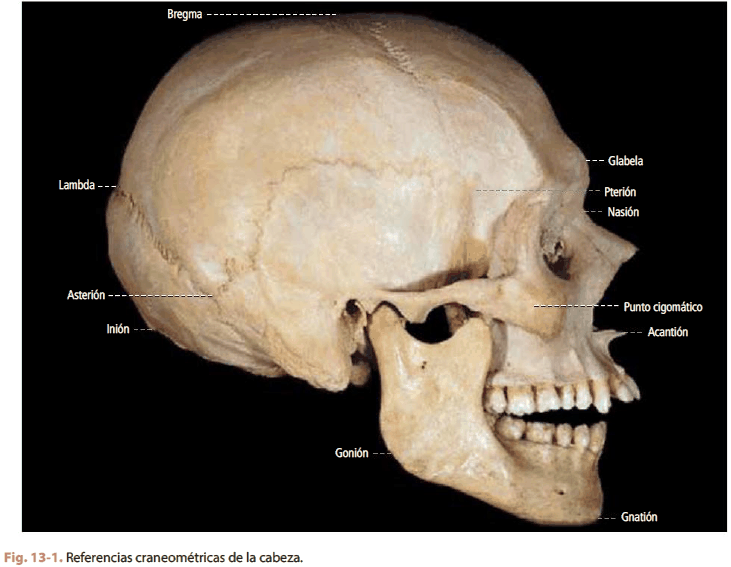
El dacrión (del griego dákryon, lágrima) marca el ángulo inferomedial de la órbita. Justo detrás está la fosa del saco lagrimal, entre las crestas lagrimales anterior y posterior. Cuando en una dacriocistitis se presiona ese punto y refluye material por el punto lagrimal, lo que estás haciendo es comprimir un saco alojado en una fosa que tiene un nombre craneométrico de hace ciento cincuenta años. Localízalo en tu propia cara: sigue el reborde orbitario hacia dentro y hacia abajo hasta que topes con la nariz.
Un golpe fuerte en la sien puede matar en pocas horas. Ahí está la razón: en el pterión se juntan cuatro huesos y el hueso es finísimo, y justo por debajo, en un surco de la cara interna, corren las ramas anteriores de la arteria meníngea media. La fractura del pterión desgarra la arteria; la sangre se acumula entre el hueso y la duramadre —hematoma epidural— y comprime la corteza. Moore lo dice sin rodeos: una hemorragia de la meníngea media no tratada puede causar la muerte en pocas horas. En la nuca, en cambio, el occipital es grueso y no hay ninguna arteria grande pegada al hueso.
Índice cefálico. Es el diámetro transversal máximo × 100 dividido por el diámetro anteroposterior máximo. Cuanto más alta la cifra, más redondeado y aplanado el cráneo (braquiocéfalo); cuanto más baja, más alargado (dolicocéfalo).
La edad, por las suturas. Sirve para estimar la edad de un cráneo, y es un dato que conviene tener presente porque contradice la intuición de que las suturas se cierran «al terminar de crecer»:
Es decir: el cráneo de una persona de treinta años todavía tiene todas sus suturas abiertas. Lo veremos otra vez al hablar del período senil.
3. ¿Qué tienen en común el bregma, el lambda, el pterión y el asterión, que no tienen la glabela ni el inión?
La calvaria es fácil: cuatro huesos lisos, tres suturas, nada que pase por dentro. La base es lo contrario: es donde el cráneo se complica, y es donde vive casi todo lo que le importa a un optómetra. Hay que verla dos veces —por fuera y por dentro— porque son la misma pared vista desde los dos lados.
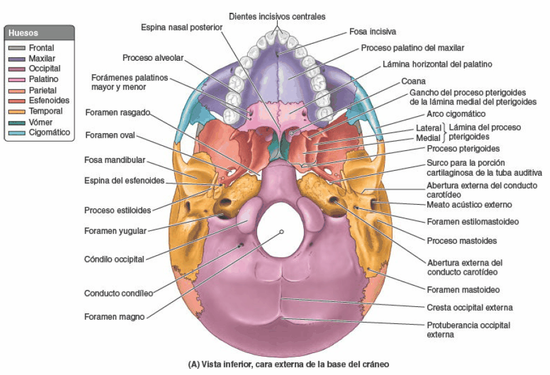
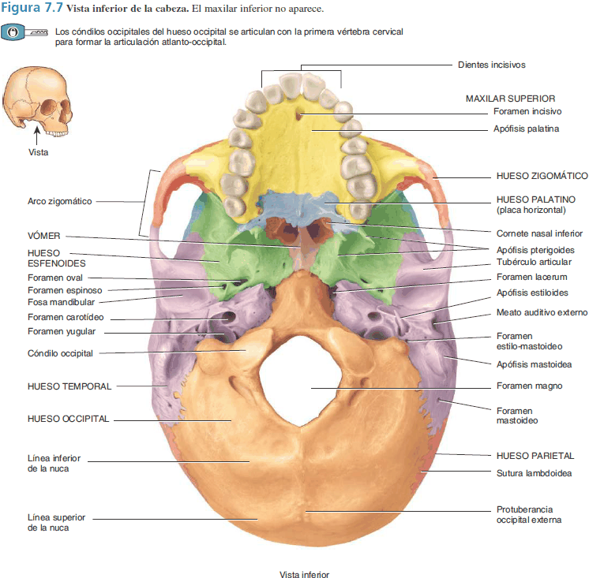
Si retiras la calvaria y miras el suelo desde arriba, no ves una superficie plana: ves tres escalones que bajan de delante hacia atrás. Y cada escalón está ocupado por una parte distinta del encéfalo — es el mejor ejemplo de la clase de que la forma del hueso es el molde de lo que se apoya en él.
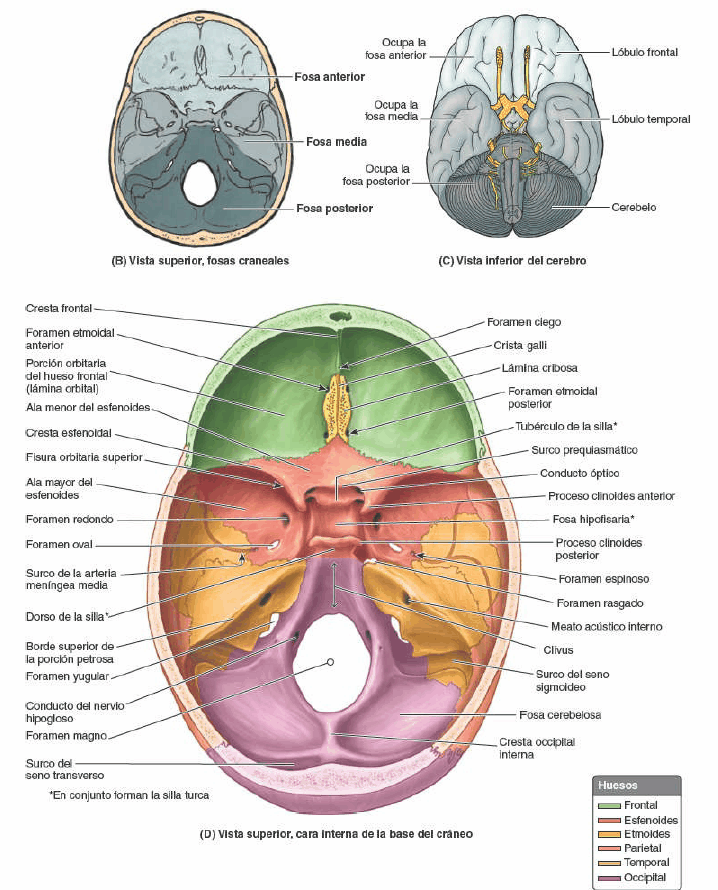
| Fosa | Huesos que la forman | Qué se apoya | Sus aberturas |
|---|---|---|---|
| Anterior la más alta |
Porción orbitaria del frontal, lámina cribosa del etmoides, alas menores del esfenoides | Los lóbulos frontales | Foramen ciego · forámenes olfatorios de la lámina cribosa · forámenes etmoidales anterior y posterior |
| Media en forma de mariposa |
Cuerpo y alas mayores del esfenoides, porción escamosa y cara anterior de la porción petrosa del temporal | Los lóbulos temporales; en el centro, la hipófisis en la fosa hipofisaria de la silla turca | Conducto óptico · fisura orbitaria superior · foramen redondo · foramen oval · foramen espinoso · foramen lacerum |
| Posterior la más profunda |
Occipital en su mayor parte, cara posterior de la porción petrosa del temporal | El cerebelo y el tronco del encéfalo | Foramen magno · foramen yugular · conducto del hipogloso · meato acústico interno |
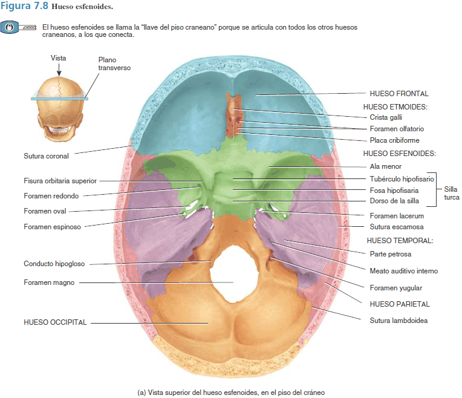
Cuando se fractura la base del cráneo puede romperse también la duramadre, y entonces el líquido cerebroespinal se escapa por donde encuentra salida: por la nariz si la fractura pasa por la lámina cribosa o los senos (rinorraquia), por el oído si pasa por el peñasco (otorraquia). Un paciente traumatizado que gotea líquido claro por una fosa nasal tiene una fractura de base hasta que se demuestre lo contrario. Y como cada fosa lleva sus nervios craneales, qué nervio falla dice por dónde va el trazo de fractura.
4. Un paciente sufre un traumatismo craneal y pierde el olfato de forma permanente. ¿Qué se ha roto, y en qué fosa?
Aquí está la respuesta a la pregunta 1 del inicio. El cráneo está lleno de agujeros porque el encéfalo no serviría de nada encerrado: tiene que recibir sangre, devolverla, recibir información de los sentidos y mandar órdenes a los músculos. Cada agujero es un compromiso entre proteger y comunicar, y por eso está en un sitio concreto y no en otro.
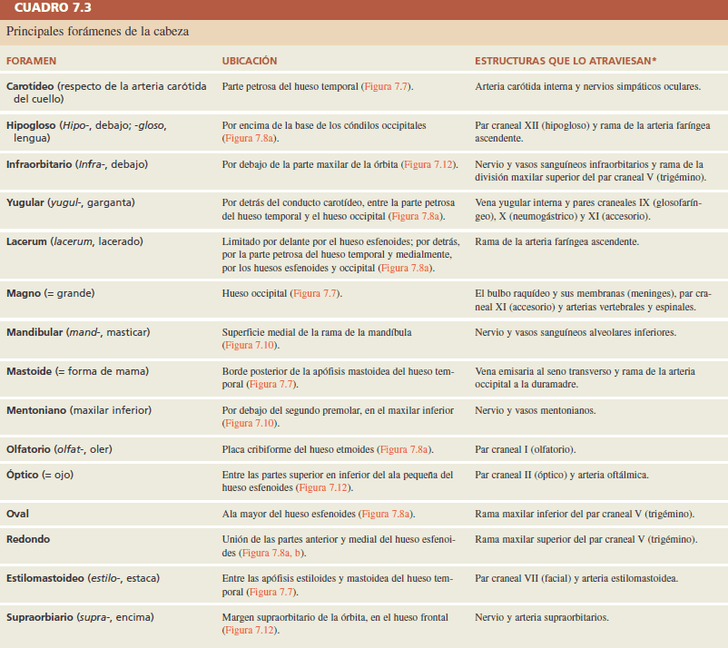
De todo el cuadro, estos son los que tienen que ver con el ojo. Los ordeno por función, no alfabéticamente.
| Abertura | En qué hueso | Qué pasa por ella | Por qué te importa |
|---|---|---|---|
| Conducto óptico | Ala menor del esfenoides | Nervio óptico (NC II) y arteria oftálmica | Es la única vía de la visión y la única irrigación del ojo. Todo lo que lo estreche deja ciego |
| Fisura orbitaria superior | Entre las alas mayor y menor del esfenoides | NC III, IV, V1 y VI, y la vena oftálmica superior | Por aquí entra todo lo que mueve el ojo y todo lo que le da sensibilidad |
| Fisura orbitaria inferior | Entre el maxilar, el palatino y el ala mayor del esfenoides | Nervio y vasos infraorbitarios (V2) | Comunica la órbita con la fosa infratemporal y la pterigopalatina, por debajo |
| Foramen supraorbitario | Frontal, en el borde supraorbitario | Nervio y arteria supraorbitarios (V1) | Se palpa. Sensibilidad de la frente y del párpado superior |
| Foramen infraorbitario | Maxilar, bajo el reborde | Nervio y vasos infraorbitarios (V2) | Es el que queda dormido en una fractura del piso de la órbita |
| Foramen redondo | Ala mayor del esfenoides | Rama maxilar del trigémino (V2) | El origen del nervio que acaba saliendo por el infraorbitario |
| Foramen oval | Ala mayor del esfenoides | Rama mandibular del trigémino (V3) | Completa el trío: V1 por la fisura, V2 por el redondo, V3 por el oval |
| Foramen estilomastoideo | Temporal, entre las apófisis estiloides y mastoides | Nervio facial (NC VII) | Sale por aquí el nervio que cierra el párpado. Si falla, el ojo no se protege |
El Cuadro 7.3 se titula «principales forámenes» y va en orden alfabético… y por eso la fisura orbitaria superior no aparece: no es un foramen (un agujero redondo), sino una fisura (una hendidura entre dos huesos o dos partes de un hueso). Lo mismo pasa con la inferior.
No es una errata: es terminología. Pero es exactamente el tipo de detalle que hace que un estudiante estudie el cuadro entero y siga sin saber por dónde entran los nervios que mueven el ojo. Las dos aberturas más importantes de tu profesión no están en la tabla de los forámenes.
5. Según el Cuadro 7.3, ¿qué tienen en común el foramen yugular y el foramen magno, y qué los diferencia?
La cara ósea es catorce huesos, pero funcionalmente son tres cosas: un bloque fijo soldado al cráneo, una pieza móvil que cuelga de él, y un hueso suelto en el cuello que no toca a ninguno.
Latarjet lo describe bien: es un hueso voluminoso soldado a todos los demás huesos de la cara excepto a la mandíbula. Los dos maxilares se unen en la línea media por la sutura intermaxilar, y entre los dos forman:
Es decir: el maxilar es a la vez suelo de la órbita, techo de la boca, pared de la nariz y caja de aire. Cuatro funciones en un hueso — y eso explica por qué es tan delgado en el sitio donde se cruzan.
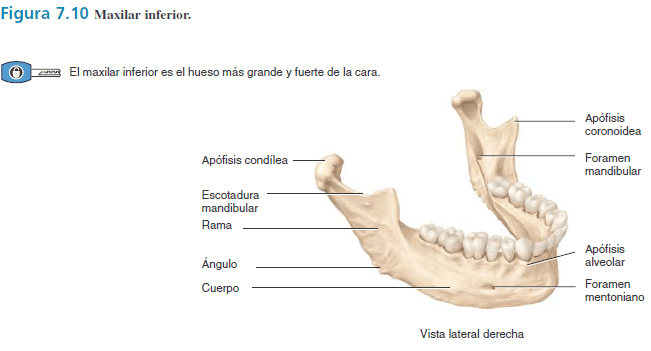
Dos agujeros para el mismo nervio: el foramen mandibular, en la cara medial de la rama, por donde entra el nervio alveolar inferior, y el foramen mentoniano, bajo el segundo premolar, por donde sale convertido en nervio mentoniano. El nervio recorre el hueso por dentro, dando ramos a cada diente. Es lo que anestesia el odontólogo cuando pincha «atrás y adentro» antes de tocar una muela.
La cabeza de la mandíbula encaja en la fosa mandibular del temporal, por delante del meato acústico externo, y se desliza hacia el tubérculo articular al abrir la boca. Es la única sinovial de la cabeza — con todo lo que eso implica de la clase 4: cápsula, membrana y líquido sinovial, cartílago articular y, aquí, un disco que la divide en dos compartimentos. Se estudia a fondo con los músculos masticadores.
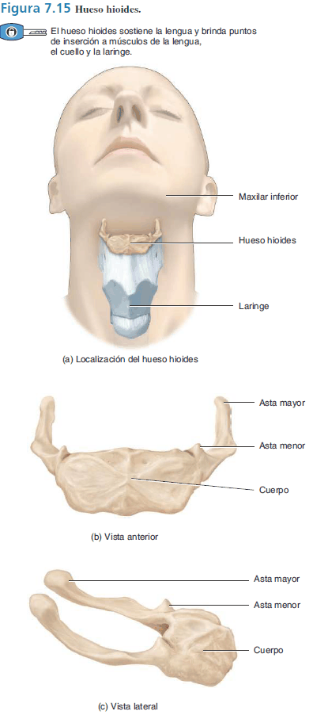
Es único en todo el esqueleto: no se articula con ningún otro hueso. Está suspendido de los procesos estiloides de los temporales por ligamentos y músculos, y flotando ahí sostiene la lengua y da inserción a los músculos de la lengua, del cuello y de la faringe.
Piensa en lo que eso significa: un hueso cuya única sujeción son partes blandas. Es la demostración más limpia de que un hueso no necesita una articulación para tener función — le basta con ser un anclaje rígido en medio de tejido que tira.
Por lo mismo, es frágil de una forma característica: se fractura en los estrangulamientos, y por eso se examina con cuidado en las autopsias cuando se sospecha esa causa de muerte.
6. ¿Por qué un golpe en el mentón puede fracturar la mandíbula cerca de la articulación, a varios centímetros del punto de impacto?
En la clase 4 dejamos una idea a medias: las suturas no existen para moverse, existen para crecer. Hoy la terminamos, porque el cráneo es el mejor ejemplo del cuerpo de un hueso que tiene que ser rígido y expandible al mismo tiempo.
En el embrión, la cabeza es cartílago y mesénquima en placas alrededor del encéfalo. Al nacer, la osificación todavía no ha terminado, y en los ángulos de los huesos quedan áreas de tejido conectivo denso sin osificar: las fontanelas, los «puntos blandos».
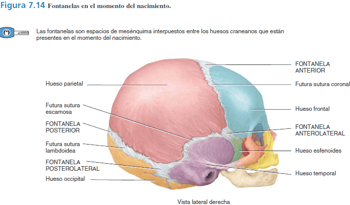
| Fontanela | Número | Entre qué huesos | Cuándo se cierra |
|---|---|---|---|
| Anterior (bregmática) | Impar | Frontal y los dos parietales | 18–24 meses. Es la mayor, en forma de rombo |
| Posterior (lambdoidea) | Impar | Los dos parietales y el occipital | Unos 2 meses. Mucho más pequeña |
| Anterolaterales (ptéricas) | Pares | Frontal, parietal, temporal y esfenoides — cuatro huesos | Unos 3 meses. Pequeñas e irregulares |
| Posterolaterales (astéricas) | Pares | Parietal, temporal y occipital | Empiezan al mes o dos, pero no cierran del todo hasta el año |
Seis en total. Y no son un defecto de fabricación: son espaciadores. Permiten que los huesos vecinos crezcan por el borde, dan a la cabeza fetal la flexibilidad para deformarse al pasar por el canal del parto —los huesos llegan a cabalgar unos sobre otros— y después dejan sitio al crecimiento explosivo del encéfalo durante el primer año.
Es el único sitio del cuerpo donde se puede ver y palpar la presión intracraneal sin tocar el hueso. Una fontanela tensa y abombada sugiere hipertensión intracraneal; una hundida, deshidratación; y su pulsatilidad se explora de rutina en pediatría. La velocidad a la que se cierran, además, ayuda a estimar el desarrollo cerebral — y por eso se puede usar como referencia para extraer sangre del seno sagital superior.
Latarjet divide toda la vida del cráneo en tres períodos, y visto así se entiende mucho mejor que como una lista de fechas:
El cráneo del niño. Elasticidad máxima gracias a las fontanelas: sirve para nacer y para alojar un encéfalo que se duplica.
Las fontanelas ya cerraron, pero las suturas siguen produciendo hueso hasta la edad adulta. La calvaria continúa agrandándose por sus bordes.
Hacia los 45 años empiezan las sinostosis: las suturas se sueldan. Y los huesos de la bóveda se adelgazan a costa del diploe y de la lámina externa.
Si una sutura se suelda antes de tiempo, el cráneo no puede crecer perpendicular a ella — así que crece en las otras direcciones, y la cabeza sale deformada de una manera que depende de qué sutura se cerró. Es la prueba definitiva de que la sutura era un sitio de crecimiento y no una simple junta. Y también explica por qué la pregunta «¿para qué sirve una articulación que no se mueve?» tiene respuesta.
7. ¿Qué fontanela está rodeada por cuatro huesos craneales distintos, y en qué punto del adulto se convierte?
Esta es la sección que convierte una lista de huesos en una explicación. La pregunta es simple: si el cráneo está lleno de agujeros y de cavidades llenas de aire, ¿cómo resiste? Y la respuesta es la misma que da un arquitecto: no resiste por igual en todas partes. Resiste por pilares, y entre pilar y pilar deja paredes finas que no soportan nada.
Considerable en el recién nacido, disminuye con la edad. Las paredes se deforman hacia dentro y recuperan su forma. Latarjet da la cifra: hasta 1 cm en sentido transversal sin fracturarse.
A medida que las suturas se osifican, esa tolerancia se pierde.
Depende de la solidez del hueso y de la forma de las suturas. Las dentadas de la calvaria impiden que los huesos se separen; las en bisel, como la esfenoescamosa, permiten cierto juego que aumenta la resistencia de una zona frágil.
Por eso las disyunciones traumáticas son excepcionales y las fracturas, frecuentes.
Tres medianas:
Cuatro laterales, dos a cada lado:
Todos convergen en un punto central de la base, sobre la porción basilar del occipital y el cuerpo del esfenoides.
Quedan entre los pilares, tres a cada lado:
Y hay algo más: los propios agujeros debilitan los pilares. Latarjet los enumera uno a uno:
El macizo facial se somete a fuerzas distintas —masticación desde abajo y traumatismos desde delante—, así que se refuerza de otra manera. Es un conjunto de huesos finos, lleno de cavidades, atravesado por tres engrosamientos:
Anteromedial. Sube desde el canino hacia el reborde orbitario y la frente.
Lateral. Sube desde los molares por el pómulo hasta el arco cigomático.
Posterior. Es por donde la cara se apoya sobre el punto central de la base del cráneo.
Los tres se conectan entre sí por arbotantes horizontales —frontomaxilar, frontal lateral, cigomático—, exactamente como una catedral gótica: la fuerza que sube desde los dientes se descompone en muchas líneas divergentes antes de llegar al cráneo.
Latarjet llama a los relieves del macizo facial «verdaderos parachoques en caso de accidente»: mediales, el macizo incisivo y el saliente de los huesos nasales; laterales, los rebordes orbitarios superior e inferior y el hueso cigomático.
Es literal. Pon el dedo en tu reborde orbitario superior y sigue el anillo entero: ese aro grueso de hueso es lo que hace que un balonazo golpee el marco y no el ojo. Y es también la razón de la paradoja que veremos en la sesión 2: en la fractura por estallido, el reborde queda intacto y lo que se rompe es el piso. El parachoques aguanta; la pared fina de detrás, no.
La convexidad de la bóveda reparte el golpe y minimiza su efecto. Cuando no basta:
Las basilares son otra cosa: afectan al occipital alrededor del foramen magno, al temporal, al esfenoides o al techo de la órbita, y son las que producen rinorraquia y otorraquia de LCE.
8. Dos pacientes reciben golpes de la misma intensidad: uno en la glabela, otro en la sien. El de la glabela tiene una herida aparatosa pero ninguna fractura; el de la sien no tiene herida y llega inconsciente dos horas después. ¿Qué principio arquitectónico explica mejor la diferencia?
Los ocho huesos que envuelven el encéfalo y sus meninges: la calvaria más la base.
👁 Tres de ellos llegan a la órbita: frontal, esfenoides y etmoides.
Los catorce huesos de la cara, derivados del mesénquima de los arcos faríngeos.
👁 Cuatro llegan a la órbita: maxilar, cigomático, lacrimal y palatino.
El techo abovedado del neurocráneo: frontal, los dos parietales y el occipital.
👁 Es lo que se retira para ver las tres fosas craneales desde arriba.
Punto de encuentro de la sutura coronal con la sagital.
👁 En el recién nacido es la fontanela anterior, la que se cierra a los 18–24 meses.
Punto de encuentro de la sutura sagital con la lambdoidea.
👁 Era la fontanela posterior; se cierra hacia los dos meses.
Encuentro en H de cuatro huesos en la fosa temporal: frontal, parietal, temporal y ala mayor del esfenoides.
👁 El punto más fino del cráneo, con la arteria meníngea media justo debajo.
Punto craneométrico del ángulo inferomedial de la órbita, donde la sutura maxilolacrimal encuentra a la nasofrontal en forma de T.
👁 Detrás está la fosa del saco lagrimal. Es el punto que se comprime en una dacriocistitis.
Área lisa del frontal entre los dos arcos superciliares.
👁 Zona de fuerte resistencia: parte del pilar frontoetmoidal.
Fondo del ángulo nasofrontal, sobre la sutura frontonasal.
👁 Es el punto sobre el que se apoya el puente de unas gafas.
Área de tejido conectivo denso sin osificar entre los huesos craneales del feto y del lactante.
👁 Seis: anterior, posterior y dos pares laterales. Todas se convierten en suturas.
Fusión ósea completa de una articulación previamente fibrosa o cartilaginosa.
👁 En las suturas no ocurre antes de los 40 años. Si ocurre en el lactante, es craneosinostosis.
Lámina horizontal perforada del etmoides que forma parte del piso de la fosa craneal anterior.
👁 La atraviesan los filetes del NC I. Si se fractura, el olfato no se recupera.
Cresta vertical del etmoides que se levanta desde la lámina cribosa hacia la cavidad craneal.
👁 Es el anclaje anterior de la hoz del cerebro.
Depresión en el cuerpo del esfenoides —tubérculo, fosa hipofisaria y dorso— que aloja la hipófisis.
👁 Se ve bien en la radiografía lateral de cráneo. Un tumor hipofisario que crece hacia arriba comprime la vía óptica.
La gran abertura del occipital por la que pasan el bulbo raquídeo con sus meninges, el NC XI y las arterias vertebrales.
👁 Sus bordes definen dos puntos craneométricos: el basión delante y el opistión detrás.
Puente óseo formado por el proceso temporal del cigomático y el proceso cigomático del temporal.
👁 Es el límite inferior de la fosa temporal y un pilar del macizo facial.
Siete preguntas más, todas de la sesión de la mañana. Responde sin volver atrás; la retroalimentación explica también por qué las otras opciones son plausibles.
9. Estás palpando la cabeza de un lactante de tres meses. Encuentras un punto blando romboidal en la parte alta de la línea media y, más atrás, otro mucho más pequeño que casi se ha cerrado. ¿Qué estás palpando y qué edad es compatible?
10. ¿Cuál de estas afirmaciones sobre el esfenoides es falsa?
11. Una radiografía muestra que la sutura sagital y la lambdoidea están completamente fusionadas, pero la coronal todavía se distingue. Los dientes están muy desgastados. ¿Qué rango de edad es el más probable?
12. Relaciona: ¿qué estructura pasa por el foramen estilomastoideo, y qué le pasaría al ojo si se lesionara?
13. ¿Qué explica que el hioides sea el único hueso del cuerpo que no se articula con ningún otro?
14. Un cráneo tiene el foramen magno, dos cóndilos y, a los lados, dos aberturas grandes por donde salía la sangre del encéfalo. ¿En qué fosa craneal estás mirando y qué abertura es esa?
15. The pterion is described as the weakest point of the skull.
Which single fact best accounts for its clinical importance?
El pterión se describe como el punto
más débil del cráneo. ¿Qué hecho explica mejor su importancia clínica?
Cinco de los siete huesos de la órbita son intuitivos: el frontal está en la frente, el maxilar en el maxilar, el cigomático en el pómulo. Los otros dos no se ven desde fuera, atraviesan la base del cráneo y reparten piezas en cuatro regiones distintas a la vez. Si esta media hora se entiende, la órbita entera se vuelve fácil.
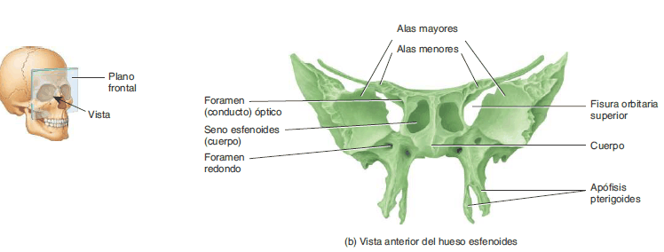
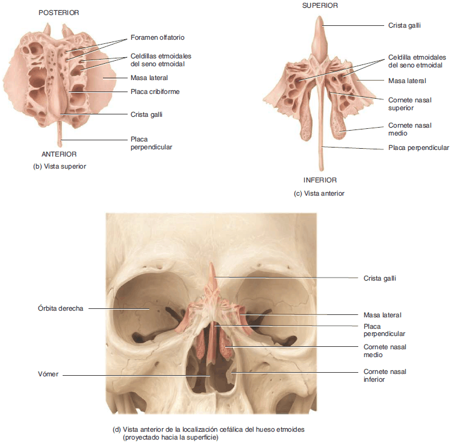
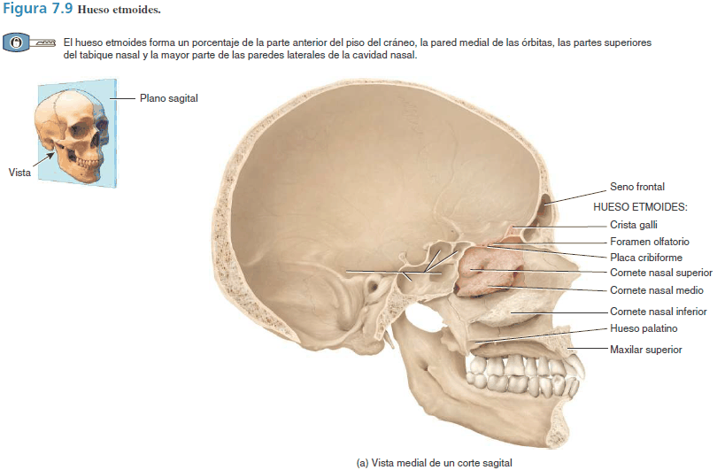
Cuatro piezas, cuatro destinos distintos:
| Parte del etmoides | Qué forma | Consecuencia |
|---|---|---|
| Crista galli | Cresta vertical hacia la cavidad craneal | Anclaje anterior de la hoz del cerebro |
| Lámina cribosa | Parte del piso de la fosa craneal anterior | La atraviesan los filetes del NC I. Punto débil del pilar frontoetmoidal |
| Lámina perpendicular | La parte superior del tabique nasal | Se articula por debajo con el vómer y por delante con el cartílago |
| Masas laterales (laberintos) |
La pared medial de las dos órbitas y las paredes laterales de la nariz, con los cornetes superior y medio | Contienen las celdillas etmoidales: aire. Y la lámina que las separa de la órbita es la lámina papirácea, de menos de un milímetro |
Moore lo describe así: «el hueso que forma la pared medial es delgado como el papel y a menudo, en un cráneo seco, las celdillas etmoidales son visibles a través de la pared ósea». Léelo otra vez: se transparenta. Ahí está la respuesta a la pregunta 4 del inicio, y ahí está el origen de la urgencia más frecuente que verás asociada a la órbita — la celulitis orbitaria de origen etmoidal, que trataremos en la sección 16.
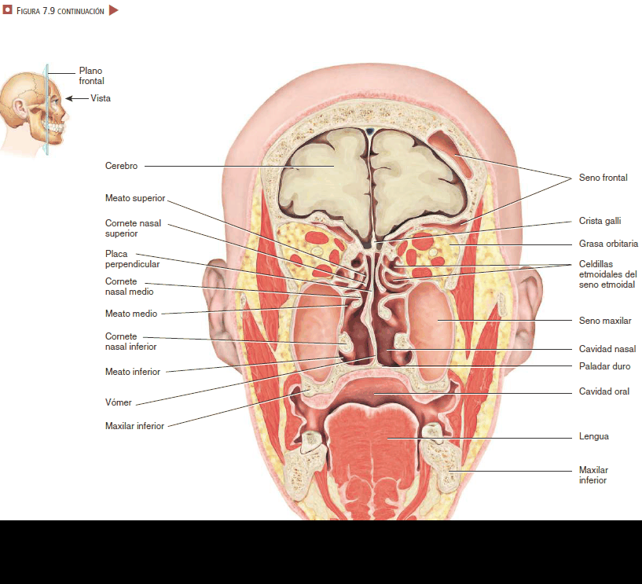
16. ¿Qué parte del etmoides es la que forma la pared medial de la órbita, y qué hay inmediatamente al otro lado de ella?
Aquí está el centro de la clase, y probablemente de todo el semestre para tu carrera. La órbita es una pirámide de cuatro caras con la base —el orificio orbitario— hacia delante y el vértice hacia atrás. Contiene y protege el bulbo ocular, sus músculos, sus nervios, sus vasos y la mayor parte del aparato lagrimal; y todo el espacio que sobra lo rellena grasa orbitaria.
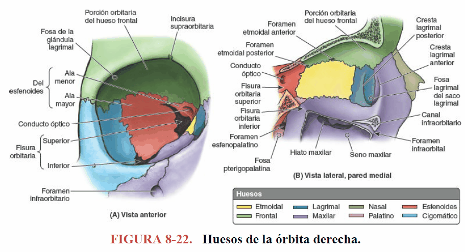
| Pared | Huesos | Grosor | Qué hay al otro lado |
|---|---|---|---|
| Techo (pared superior) |
Porción orbitaria del frontal; cerca del vértice, el ala menor del esfenoides | Delgado, hasta ser translúcido | La fosa craneal anterior y el lóbulo frontal. En su ángulo anterolateral, la fosa de la glándula lagrimal |
| Pared medial | Etmoides sobre todo, más aportes del frontal, el lagrimal y el esfenoides | La más delgada de las cuatro — lámina papirácea | Las celdillas etmoidales y, más atrás, el seno esfenoidal. Al frente, el surco y la fosa del saco lagrimal |
| Pared lateral | Proceso frontal del cigomático y ala mayor del esfenoides | La más resistente y gruesa | Por delante, nada: es superficie. Por detrás, la fosa craneal media y el lóbulo temporal |
| Piso (pared inferior) |
Maxilar principalmente, más cigomático y palatino | Delgado | El seno maxilar. La separa de la pared lateral la fisura orbitaria inferior |
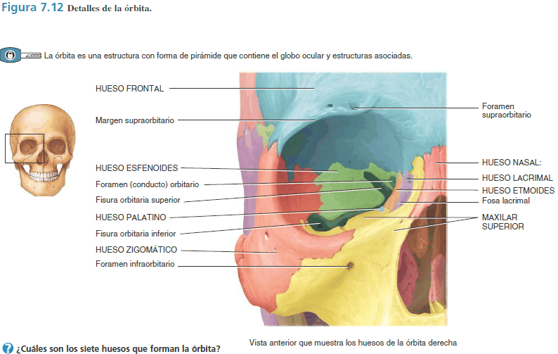
El vértice de la órbita está en el conducto óptico, dentro del ala menor del esfenoides, justo medial a la fisura orbitaria superior. Es un espacio de pocos milímetros por el que pasa absolutamente todo lo que el ojo necesita — y por eso una lesión ahí produce el cuadro más devastador de la órbita, que veremos en la sección 16.
Los siete huesos están tapizados por dentro por la periórbita, que es simplemente el periostio de la órbita — la misma membrana de la clase 4, con otro nombre. Lo interesante es con qué se continúa, porque eso define por dónde puede propagarse una infección:
17. ¿Cuál de estas combinaciones pared–vecino es incorrecta?
Tortora enumera cinco aberturas asociadas a cada órbita, y las sitúa por su posición geométrica dentro de la pirámide. Vale la pena aprenderlas así —por dónde están— y no como una lista suelta, porque en una foto o en un cráneo real es la posición lo que te permite identificarlas.
| # | Abertura | Dónde está, exactamente | Qué pasa |
|---|---|---|---|
| 1 | Conducto (foramen) óptico | En la unión del techo con la pared medial, en el vértice | NC II y arteria oftálmica |
| 2 | Fisura orbitaria superior | En el ángulo superolateral del vértice, entre las dos alas del esfenoides | NC III, IV, V1 y VI, y la vena oftálmica superior |
| 3 | Fisura orbitaria inferior | En la unión de la pared lateral con el piso | Nervio y vasos infraorbitarios (V2) |
| 4 | Foramen supraorbitario | En el lado medial del margen supraorbitario del frontal | Nervio y arteria supraorbitarios (V1) |
| 5 | Fosa lacrimal | En el hueso lacrimal, en el ángulo inferomedial — el dacrión | El saco lagrimal, que continúa en el conducto nasolagrimal |
Hay dos más que Moore señala en la pared medial y que conviene reconocer: los forámenes etmoidales anterior y posterior, en la línea donde el techo se encuentra con la pared medial. Y en el piso, siguiendo hacia delante desde la fisura orbitaria inferior, el surco se convierte en canal infraorbitario y sale a la cara por el foramen infraorbitario: un mismo nervio, tres nombres según vaya descubierto, cubierto o afuera.
Es la abertura que más te va a hacer falta en toda la carrera, así que vale la pena decirla completa. Por ella entran:
Tres pares craneales para mover un ojo, y un cuarto solo para sentirlo. Ningún otro órgano del cuerpo tiene ese despliegue.
Los cuatro nervios que acabas de leer no vienen de cualquier sitio: antes de entrar en la órbita recorren la pared del seno cavernoso, a los lados del cuerpo del esfenoides, pegados a la arteria carótida interna. Por eso una trombosis del seno cavernoso da a la vez oftalmoplejía, dolor y edema del ojo.
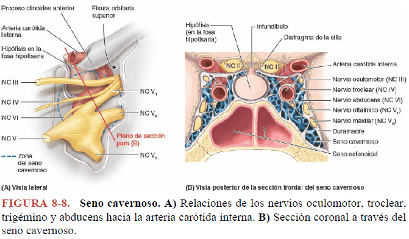
18. Un paciente conserva la visión perfecta en el ojo derecho, pero ese ojo no se mueve en ninguna dirección y el párpado está caído. ¿Qué abertura de la órbita está comprometida y cuál está respetada?
La órbita no está sola en el macizo facial: está empotrada entre cavidades llenas de aire. Entender dónde está cada una es lo que convierte una lista de senos en una explicación clínica.
Son cavidades revestidas de mucosa dentro de cuatro huesos: frontal, esfenoides, etmoides y maxilar. Su mucosa se continúa con la de la nariz, y todos drenan en la pared lateral de la cavidad nasal.
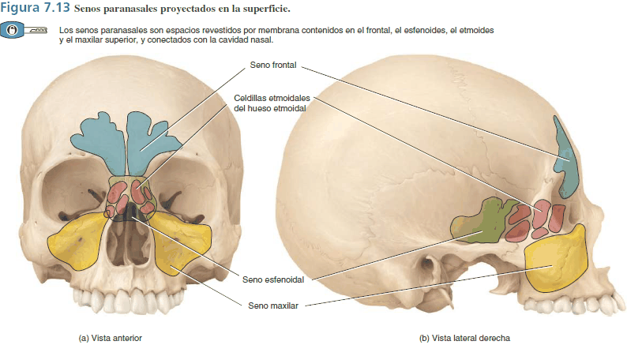
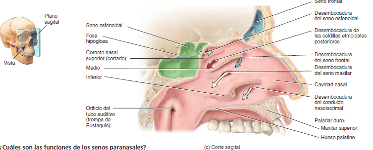
Tortora da tres funciones, y las tres son razonables:
Y un detalle de desarrollo que enlaza con la sesión 1: son pequeños o inexistentes al nacer, y se agrandan en dos empujones — cuando erupcionan los dientes y al empezar la pubertad. Los dos empujones en que crece la cara.
Tres de las cuatro paredes de la órbita son, al mismo tiempo, la pared de un seno lleno de aire. El techo comparte hueso con el seno frontal; la pared medial, con las celdillas etmoidales; el piso, con el seno maxilar. Y el espesor que separa un compartimento del otro es, en los tres casos, de menos de un milímetro.
Eso significa dos cosas. Una: lo que le pasa al seno le puede pasar a la órbita — una sinusitis puede atravesar la lámina papirácea, y un tumor de las celdillas etmoidales posteriores o del seno esfenoidal puede erosionar el hueso y comprimir el nervio óptico. Y otra: la órbita tiene por dónde descomprimirse — cuando la presión dentro sube de golpe, el piso cede hacia el seno maxilar. Volveremos a esto en la sección siguiente.
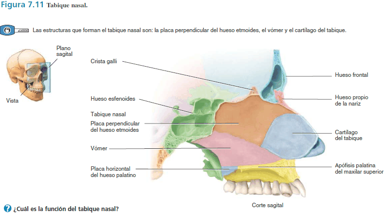
El tabique divide la cavidad nasal en las dos fosas nasales. Cuando se dice «se rompió el tabique», casi siempre se está hablando del cartílago, no de los huesos propios de la nariz — que son otra cosa y están más arriba.
La desviación suele producirse justo en la unión del vómer con el cartílago, y estrecha una de las dos fosas. Puede bloquear la respiración por ese lado, pero lo importante para ti es la cadena que viene después: la desviación bloquea la desembocadura de los senos → sinusitis crónica → y desde el etmoides, a un milímetro, está la órbita. La misma obstrucción puede afectar al meato inferior, que es donde desemboca el conducto nasolagrimal: por eso una obstrucción nasal baja puede acabar dando epífora.
19. Un niño con sinusitis desarrolla en 24 horas edema del párpado, proptosis y dolor al mover el ojo. ¿Cuál es la vía anatómica más probable, y de qué seno partió?
Hasta aquí hemos hecho el molde. Ahora, brevemente, lo que se mete dentro — no el ojo en sí, que es materia de otras asignaturas, sino las estructuras que existen porque el hueso tiene esa forma.
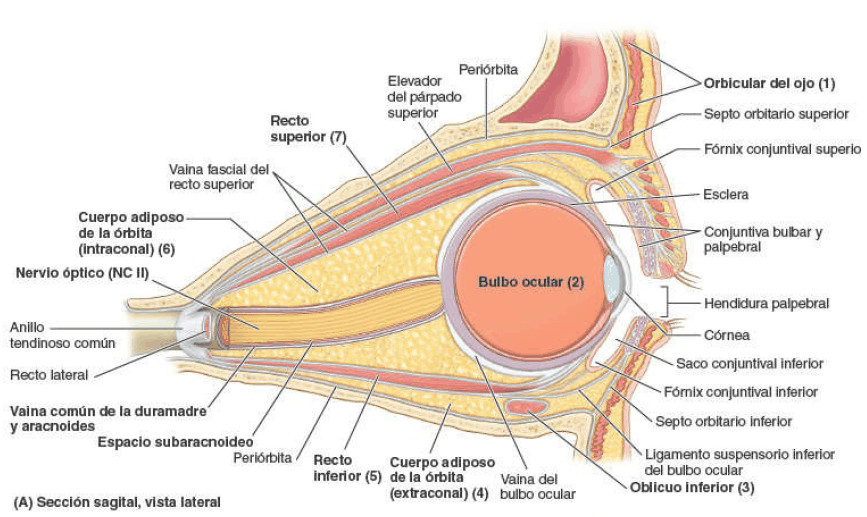
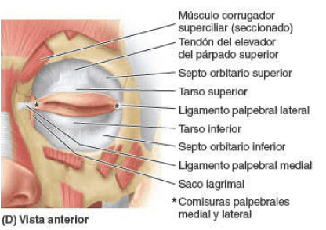
El septo orbitario es una membrana débil que va de los tarsos a los bordes de la órbita, donde se continúa con el periostio. Hace dos cosas: retiene la grasa orbitaria en su sitio y —esto es lo importante— limita la propagación de una infección desde o hacia la órbita.
Es decir: el septo es un plano. Una infección del párpado que se queda por delante de él es una celulitis preseptal, molesta pero manejable. Si atraviesa el septo o entra por detrás —por ejemplo, desde el etmoides— es una celulitis orbitaria, y eso es una urgencia que amenaza la visión.
La forma de distinguirlas en la consulta se deduce de la anatomía: detrás del septo están los músculos y el nervio óptico, así que la orbitaria duele al mover el ojo, lo desplaza hacia delante y puede afectar la visión. La preseptal, no.
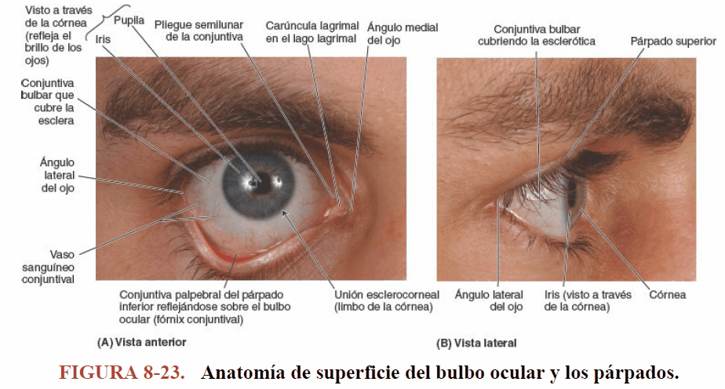
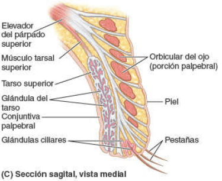
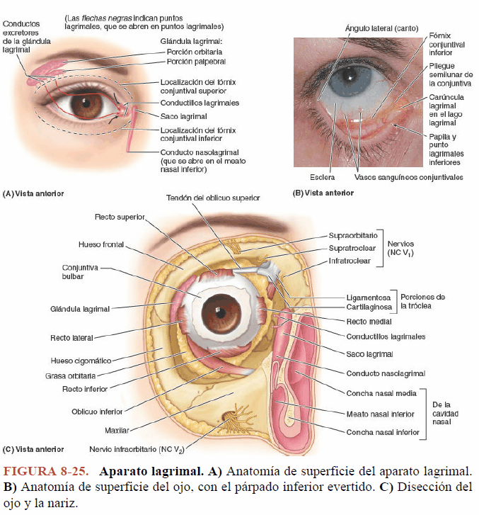
La secuencia, que es la respuesta a la pregunta 5 del inicio:
Moore lo describe con precisión: los párpados se aproximan con un movimiento de lateral a medial, y ese barrido empuja la película de líquido —con el polvo que arrastre— hacia el ángulo medial. Allí se acumula en el lago lagrimal y drena por acción capilar a través de los puntos. Si el párpado no cierra bien —parálisis del NC VII— se pierden las dos cosas a la vez: la córnea no se humedece y la lágrima no se drena. Resultado paradójico: lagrimeo abundante y córnea seca al mismo tiempo.
Y las dos parálisis a distinguir: NC III → se paraliza el elevador del párpado superior → ptosis. NC VII → se paraliza el orbicular → el párpado no cierra y el inferior se evierte.
20. Una paciente refiere epífora —le corre la lágrima por la mejilla— del ojo derecho. La producción de lágrima es normal. ¿En qué punto del recorrido está el problema, si al presionar el ángulo interno refluye material por el punto lagrimal?
Todo lo de las cuatro secciones anteriores converge aquí. Cada uno de estos cuadros es la consecuencia directa de una pared, y si te sabes las paredes no hace falta memorizar ninguno: se deducen.
Moore distingue dos mecanismos, y la diferencia es la clave del asunto:
Cuando el impacto se produce directamente sobre el reborde óseo y es lo bastante fuerte, la fractura tiende a producirse en las suturas entre los huesos que forman el borde de la órbita.
Es la fractura del «parachoques» de Latarjet, que aguanta hasta que cede por sus juntas.
Un golpe con un objeto romo sobre el ojo —una pelota, un puño, un codo— sube de golpe la presión dentro de la órbita. El reborde permanece intacto y lo que cede es una pared.
Moore lo define exactamente así: la lesión traumática indirecta que desplaza las paredes de la órbita.
| Pared que cede | Hacia dónde | Qué se ve en consulta |
|---|---|---|
| Piso — la más frecuente | Hacia el seno maxilar | Si el recto inferior o la grasa quedan atrapados en el trazo, el ojo no puede mirar hacia arriba y aparece diplopía en la mirada superior. Además, el nervio infraorbitario (V2) discurre por el canal del piso: su lesión deja dormidos el párpado inferior, el ala de la nariz, la mejilla y el labio superior de ese lado |
| Pared medial | Hacia las celdillas etmoidales y el seno esfenoidal | Puede aparecer enfisema orbitario: al sonarse la nariz, el aire pasa del etmoides a la órbita y la hincha. Es un signo que hay que saber esperar, y una razón para decirle al paciente que no se suene |
| Techo | Hacia la fosa craneal anterior | Es más fuerte que la medial y la inferior, pero Moore advierte que es lo bastante fina para ser translúcida y fácilmente penetrable: un objeto punzante puede atravesarla y llegar al lóbulo frontal |
Las fracturas de la órbita suelen provocar hemorragia intraorbitaria. Y aquí la anatomía manda otra vez: la órbita es una caja de hueso cerrada por detrás y por los lados, y lo único que puede desplazarse es el contenido hacia delante. El resultado es el exoftalmos —la protrusión del bulbo ocular—, que también producen los tumores orbitarios por la misma razón mecánica.
Ya está todo dicho en las secciones 14 y 15; solo hay que juntarlo:
Por la proximidad del nervio óptico a las celdillas etmoidales posteriores y al seno esfenoidal, un tumor maligno de esos senos puede erosionar las delgadas paredes óseas y comprimir el nervio óptico y el contenido de la órbita.
Y un tumor de la fosa craneal media puede entrar en la órbita por la fisura orbitaria superior.
Recuerda la geometría de la sección 13: el conducto óptico y la fisura orbitaria superior están a milímetros uno de la otra.
Una lesión que ocupe ese vértice afecta a las dos aberturas a la vez, y deja el ojo ciego e inmóvil — la visión por el conducto y todos los motores por la fisura. La combinación no tiene sentido clínico hasta que se conoce la anatomía; con ella, es obvia.
21. Un joven recibe un pelotazo en el ojo izquierdo. El reborde orbitario está íntegro. Refiere visión doble al mirar hacia arriba y nota dormida la mejilla izquierda. ¿Qué ha pasado, y por qué la mejilla?
Latarjet abre el capítulo con una frase que vale para toda la imagenología: «la interpretación correcta supone el conocimiento anatómico preciso y seguro, único que permite la transposición en el espacio de una imagen representada sobre un solo plano». Traducido: una radiografía es una sombra, y solo se lee si ya sabes lo que está proyectando la sombra. Por eso esta sección va al final y no al principio.
Cada proyección se define por hacia dónde entra el rayo y qué apoya el paciente en la placa. De ahí vienen los nombres.
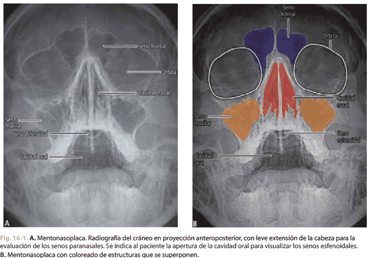
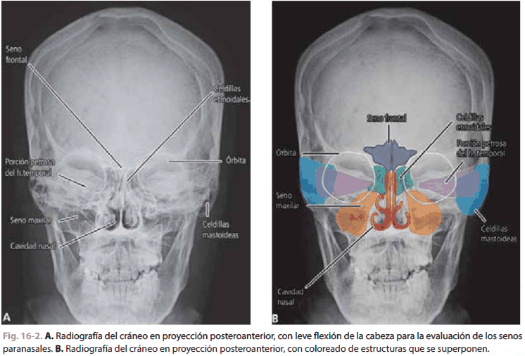
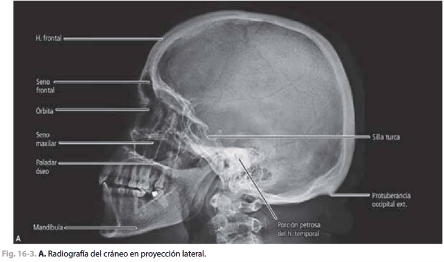
La proyección de Hirtz es vertical y transversal, y da una excelente visión de la base del cráneo: órbitas, senos maxilares, etmoides, esfenoides, los forámenes de la fosa media, la porción petrosa y mastoidea del temporal, el foramen magno y el diente del axis. Es la vista inferior de la sesión 1, convertida en imagen.
Y hay proyecciones especiales para cada pregunta concreta: órbitas, conducto óptico, silla turca, proceso mastoides. Que exista una proyección dedicada solo al conducto óptico dice bastante de lo importante que es ese agujero de pocos milímetros.
22. Quieres valorar el piso de la órbita y los senos maxilares en un paciente con sospecha de fractura por estallido. ¿Qué proyección simple pides y por qué no la posteroanterior con flexión?
Cavidad ósea piramidal del esqueleto facial, con base anterolateral y vértice posteromedial.
👁 Siete huesos: tres craneales y cuatro faciales.
El periostio que tapiza los huesos de la órbita por dentro.
👁 Se continúa con la duramadre en el conducto óptico y con el pericráneo en los rebordes.
Lámina ósea de la masa lateral del etmoides que forma la pared medial de la órbita.
👁 Menos de 1 mm. En un cráneo seco se transparentan las celdillas etmoidales a través de ella.
Conducto del ala menor del esfenoides, en la unión del techo con la pared medial.
👁 NC II y arteria oftálmica. Es el vértice de la órbita.
Hendidura entre las alas mayor y menor del esfenoides, en el ángulo superolateral del vértice.
👁 NC III, IV, V₁ y VI, y la vena oftálmica superior.
Hendidura en la unión de la pared lateral con el piso, entre maxilar, palatino y ala mayor.
👁 Nervio y vasos infraorbitarios (V₂). Comunica con la fosa pterigopalatina.
Depresión entre las crestas lagrimales anterior y posterior, en el ángulo inferomedial de la órbita.
👁 Aloja el saco lagrimal; se continúa hacia abajo con el conducto nasolagrimal.
Conducto óseo entre el lagrimal, el maxilar y el cornete inferior, que baja del saco a la nariz.
👁 Desemboca en el meato nasal inferior. Es la razón de que llorar tape la nariz.
Membrana que va de los tarsos a los bordes de la órbita, donde se continúa con el periostio.
👁 Es el plano que separa la celulitis preseptal de la orbitaria.
Banda densa de tejido conectivo que da rigidez a cada párpado; contiene las glándulas tarsales.
👁 Se ancla al hueso por los ligamentos palpebrales medial y lateral.
Anillo fibroso en el vértice de la órbita del que nacen los cuatro músculos rectos.
👁 Divide la grasa orbitaria en intraconal y extraconal. Se estudia con los músculos, en la clase 8.
El mayor de los senos paranasales, dentro del cuerpo del maxilar.
👁 Su techo es el piso de la órbita. Ahí se descomprime una fractura por estallido.
Cavidades aéreas de las masas laterales del etmoides, entre la nariz y las dos órbitas.
👁 Anteriores, medias y posteriores. Las posteriores están junto al nervio óptico.
Cada una de las dos aberturas nasales posteriores, separadas por el vómer.
👁 Su límite inferior es el borde posterior del paladar duro.
Espacio bajo el cornete nasal inferior, en la pared lateral de la nariz.
👁 Es el único meato donde no desemboca un seno: lo que desemboca es el conducto nasolagrimal.
Protrusión anterior del bulbo ocular por aumento del contenido orbitario.
👁 Consecuencia mecánica de una caja rígida abierta solo hacia delante: hemorragia, tumor o inflamación.
Ocho preguntas sobre la órbita. Varias piden juntar dos secciones distintas: es lo que va a pedir el parcial, y es lo que pide la clínica.
23. Enumera los siete huesos de la órbita. ¿Cuál de estas listas es correcta?
24. ¿Por qué la pared más expuesta de la órbita es la más gruesa y la más protegida es la más fina? ¿Qué principio anatómico general ilustra esto?
25. Un tumor crece en las celdillas etmoidales posteriores y erosiona hueso hacia atrás y afuera. ¿Qué estructura corre más riesgo, y por qué precisamente esa?
26. Ordena el recorrido de una lágrima desde que se produce hasta que se traga.
27. Un paciente con celulitis del párpado no tiene dolor al mover el ojo, ve perfectamente y el globo no protruye. ¿Dónde está la infección respecto al septo orbitario, y por qué esos tres datos lo determinan?
28. ¿Qué tienen en común el techo de la órbita, su pared medial y su piso, que no tiene la pared lateral?
29. ¿Por qué los ejes de las dos órbitas óseas no son paralelos, y qué consecuencia tiene?
30. A blow-out fracture of the orbital floor leaves the orbital rim
intact. Which statement best explains this apparent paradox?
Una fractura por estallido del piso de
la órbita deja intacto el reborde. ¿Qué enunciado explica mejor esta aparente
paradoja?
Recupera lo que respondiste a las nueve de la mañana. Lo que importa no es si acertaste, sino que ahora puedas decir por qué.
| La pregunta | Lo que ahora sabes |
|---|---|
| 1 · Una caja llena de agujeros | Los agujeros sí debilitan el cráneo — Latarjet nombra uno por uno los que debilitan cada pilar. Lo que hace la arquitectura no es evitar el compromiso, sino gestionarlo: siete zonas de fuerte resistencia y, entre ellas, paredes finas. El cráneo no es fuerte a pesar de sus agujeros: es fuerte alrededor de ellos |
| 2 · El golpe en la sien | El pterión es uno de los seis puntos débiles —el esfenotemporal—, donde cuatro huesos se encuentran y el hueso es finísimo. Y justo debajo, en un surco de la cara interna, corren las ramas de la arteria meníngea media. Punto fino más arteria pegada es igual a hematoma epidural. En la nuca, ni una cosa ni la otra |
| 3 · La cara del recién nacido | El neurocráneo y el viscerocráneo no crecen al mismo tiempo: al nacer la relación cara/cráneo es de 1 a 8. Lo que hace crecer la cara son los dientes —que separan maxilar y mandíbula— y la respiración, que agranda las cavidades nasales y los senos maxilares |
| 4 · La pared más fina | La medial, la lámina papirácea del etmoides: menos de un milímetro, tan fina que en un cráneo seco se transparentan las celdillas. Al otro lado están las celdillas etmoidales, y por eso una sinusitis etmoidal en un niño se convierte en una celulitis orbitaria |
| 5 · Por qué llorar tapa la nariz | Porque hay un tubo de hueso. La lágrima se recoge en el lago lagrimal, entra por los puntos, pasa a los canalículos y al saco —alojado en la fosa del hueso lagrimal, detrás del dacrión— y baja por el conducto nasolagrimal hasta el meato nasal inferior. Desde ahí, a la nasofaringe, y se traga |
Las cinco respuestas dicen lo mismo: la cabeza ósea es un compromiso entre proteger y comunicar, y siempre gana la comunicación. El cráneo se deja perforar por decenas de agujeros porque un encéfalo aislado no serviría de nada. La cara se construye alrededor de cavidades llenas de aire porque respirar, oler y hablar pesan más que ser macizo. Y la órbita —la cavidad que a ti te importa— es el caso extremo: una caja de hueso rodeada de aire por tres lados y abierta hacia el cráneo por dos rendijas, porque el ojo necesita recibir sangre, mandar la visión y mover seis músculos.
Con esto termina el hueso. La próxima clase, el jueves 3 de septiembre, abrimos el sistema muscular: fibras, contracción y los músculos de la cara — esos que se insertan en los huesos que hoy has aprendido y que hacen que una cara se mueva. Después, en la clase 8, los músculos extraoculares y la motilidad, que nacen del anillo tendinoso común en ese vértice orbitario del que tanto hemos hablado. Y en la clase 9, los pares craneales, que por fin pondrán nombre a todo lo que hoy hemos visto solo entrar y salir por agujeros.
Lectura previa para la próxima: Tortora, capítulo 10.
En la clase 4 cerramos diciendo que el ojo es el único órgano de los sentidos que vive dentro de una caja de hueso y sale de ella por un agujero. Hoy podemos decirlo con precisión: sale por un conducto de pocos milímetros excavado en el ala menor del esfenoides, con la arteria que lo nutre metida en el mismo canal, y a un milímetro de una hendidura por la que pasa todo lo que lo mueve. Toda la anatomía de la órbita cabe en esa frase, y toda su patología también.